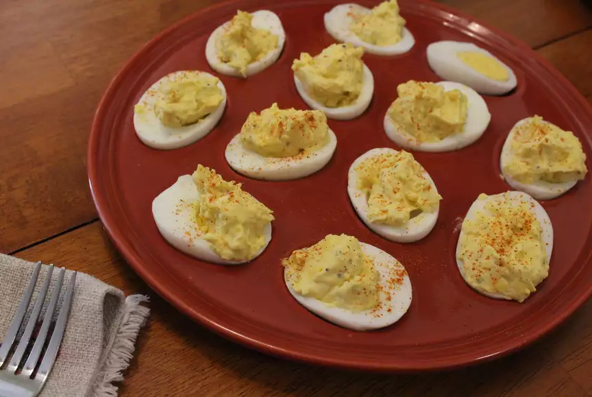

Deviled Eggs with Horseradish

Description
Classic deviled eggs with a kick of horseradish.
Ingredients
- 12 eggs
- 1/2 cup mayonnaise
- 2 tablespoons prepared horseradish
- 2 teaspoons chopped fresh dill
- 1/2 teaspoon dry mustard
- 1/4 teaspoon salt
- 1/8 teaspoon pepper
- 1/8 teaspoon paprika
Directions
- Place eggs in a saucepan and cover with water. Bring to a boil; remove from heat and let eggs
stand in hot water for 15 minutes. Remove eggs and cool under cold running water; peel eggs.
Slice each egg in half lengthwise. Remove yolks and transfer to a medium bowl. Place egg
whites on a serving platter.
- Mash yolks with a fork. Stir in mayonnaise, horseradish, dill, dry mustard, salt, pepper, and
paprika. Spoon equal amounts into egg whites.